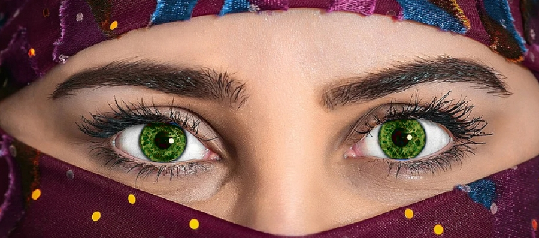
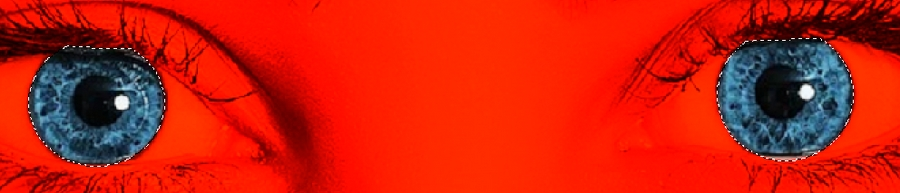

Neste exercício aprenderemos um dos conceitos mais simples de edição de imagens que é o trabalho com cores, nesse caso, selecionaremos parte de uma imagem e alteraremos sua cor. Você deverá abrir o arquivo Girl Hijab.png na pasta de imagens do curso que utilizaremos para alterar a cor dos olhos. Veja como será o resultado final:
1. Inicie o GIMP e abra a imagem.
2. Utilize a seleção elíptica em modo de adição para selecionar as duas írises, em seguida a seleção livre em modo de remoção para retirar as partes que extrapolaram o limite da íris.
Sua seleção deve ficar assim:
3. Clique no menu Cores → Matiz/Saturação.
4. Aumente levemente o valor de Saturação, e diminua o valor de Matiz.
5. Está pronto! Exporte a imagem.